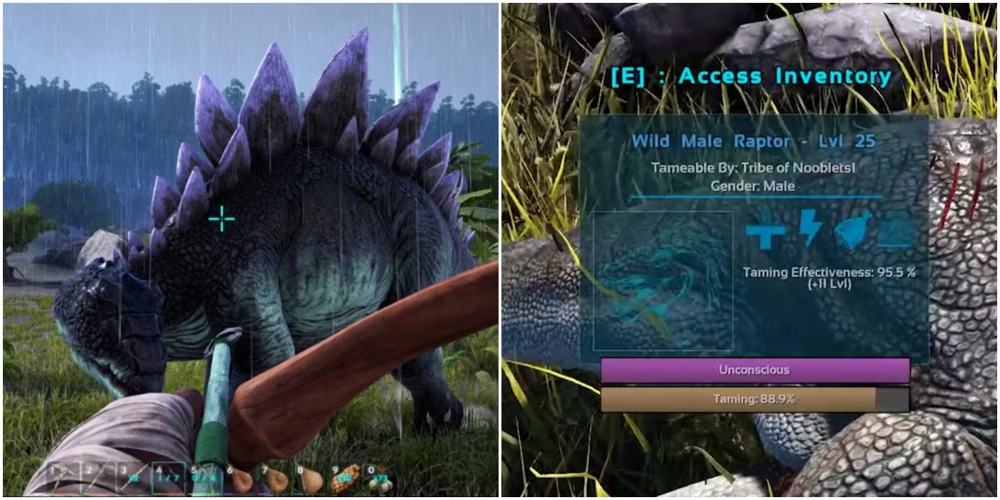
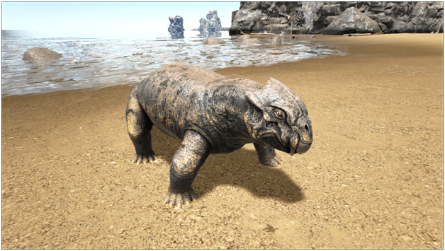
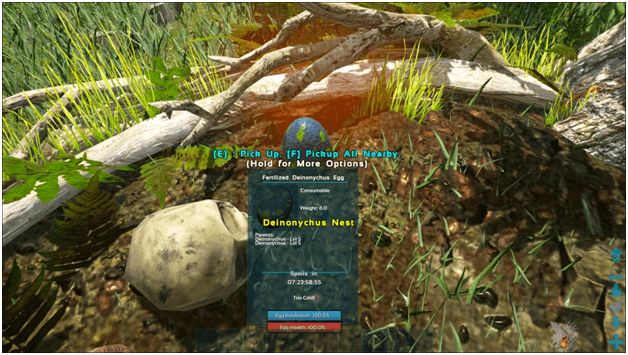

Pripitomljavanje
Dinosaure u ARK-u se treba pripitomit jer bez njih, nećete uspjeti preživiti niti pobijedit igru. Pripitomljeni dinosauri mnogo olakšavaju različite aspekte igre.
Pripitomljavanje se može razvrstati na tri glavne vrste: Knockout, Passive i Egg stealing.
Knockout:
Knockout taming funkcionira tako da uspavate dinosaura i nahranite ga odgovarajućom hranom dok nebude vaš.
Za uspavljivanje možete koristiti Bow sa Tranq Arrows, a bolja opcija je Rifle sa Tranq Darts.
Hrana koju date dinosauru ovisi o tome je li mesojed ili biljojed. Također je bitno naglasit da nisu sve bobice i svo meso jednako dobro. Za mesojede je najbolje koristiti Raw Mutton, a za biljojede bilo koje povrće umjesto bobica.

Passive:

Passive taming funkcionira tako da ne uspavate dinosaura, nego tođete do njega i poćnete ga hraniti.
Morate ostati uz dinosaura i prićekati da opet postane gladan kako bi ste ga mogli nahraniti. Hrana utjeće isto kao i kod Knockout taminga, s time da neki dinosauri mogu zahtjevati određenu hranu.
Neki passive tame dinosauri mogu postati agresivni ako ste im pre blizu tijekom procesa pripitomljavanja.
Egg stealing
Kod ove vrste, dinosauri se nemogu pripitomiti. Ali zato ostavljaju svoja jaja u gnijezdima u divljini.
Cilj je ukrasti jaje, preživjeti jer će vas dinosauri ćije ste jaje ukrali poćeti loviti, i doma izleći jaje.
Kada se jaje izlegne dobit ćete dinosaura koji će biti pripitomljen i zatim ga morate odgajati dok ne postane odrasli i spreman za borbe i putovanja.
